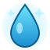
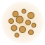
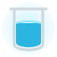
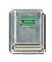
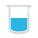

pH SENSOR
CURRENT pH

6.85pH LEVEL
TSS SENSOR
CURRENT TSS

150TSS mg/L
WATER LEVEL
CURRENT LEVEL

78%% LEVEL
SESSION OVERVIEW

- AVG pH
- 6.73
- READINGS
- 50
- AVG TSS
- 151 mg/L
- READINGS
- 50
- AVG LEVEL
- 76%
- UPTIME
- 99.8%
> SESSION OVERVIEW
CALIBRATION STATUS
pH: 4.01COMPLETE
6.86COMPLETE
9.18PENDING
Std ACOMPLETE
Std BPENDING
Std CPENDING

High SPPENDING
Low SPPENDING
Tank HgtCOMPLETE
! CALIBRATION DATA LOADED